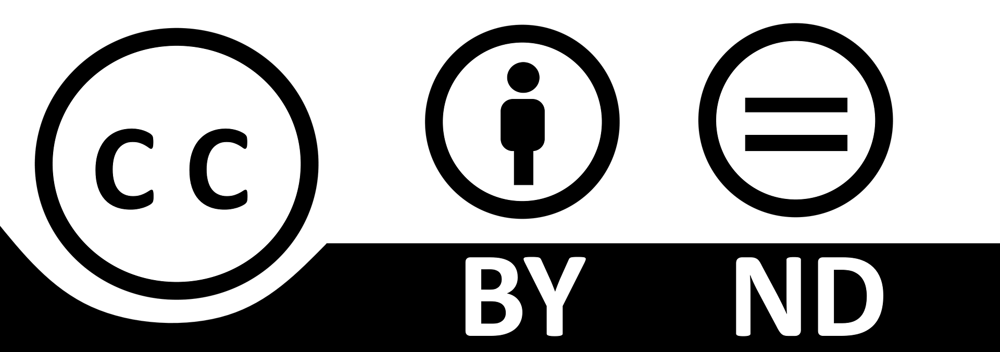

¿Hacia dónde debo ir?
¿Hacia dónde vamos? Ahora que sabemos por qué trabajamos esta SdA y cómo debemos movernos por la red, es importante vislumbrar en el horizonte "la línea de meta", es decir, el producto final.
El producto final que necesitamos saber hacer es una presentación online en Canva a través de la cual hagamos un paralelismo entre los saberes básicos explicados en la SdA sobre la vida y costumbres en Roma y nuestra vida cotidiana. Para ello, podemos utilizar una fuente de información relacionada con su centro de interés: podemos usar los videojuegos para ilustrarlo y hacer referencias a los saberes básicos a través de imágenes.
¿Por qué la elección de Canva en el alumnado de 1º de la ESO? Considero que a través de Canva, al ser una herramienta de presentaciones online intuitiva y creativa, se pueden exponer ideas de forma concreta y muy visual, algo fundamental en el alumnado de 12 y 13 años que cursa este nivel educativo. A su vez, se trata de una herramienta a la que todo el alumnado tiene fácil acceso y, tanto si desean realizar la presentación de forma individual como si lo desean hacer por parejas, pueden editarla de forma sencilla.
¿Canva es adecuado para el nivel de CDD de un alumno/a de 12-13 años? Como docente considero que sí porque tanto el efecto visual de la herramienta como su fácil manejo me han resultado pilares esenciales atendiendo a que el nivel de competencia digital que suele tener el alumnado que está cursando este nivel educativo. Acorde a mi experiencia, podríamos afirmar de forma general que el nivel de CDD del alumnado y su manejo de las herramientas educativas no es muy elevado todavía tras acabar la Educación Primaria y se están enfrentando muchos de ellos por primera vez a asignaturas de Computación y Robótica y TIC. Por ello, creo que Canva es idóneo como herramienta base.
¿Se adecua Canva al contexto y recursos de mi centro? Sí, este también es un motivo vital para su elección. En mi IES disponemos de portátiles que pueden ser usados por el profesorado en diferentes materias, además de acceso a internet. A través de ellos, el alumnado puede acceder a su presentación y, con mi ayuda, ir editando sus presentaciones.
Estos argumentos son los que me han llevado a elegir esta herramienta. En experiencias anteriores el resultado ha sido muy satisfactorio y ha incidido muy positivamente en la motivación del alumnado y en mostrarse más receptivo al uso de herramientas educativas digitales.
No le tengamos "miedo" o "rechazo" a usar una nueva herramienta digital. ¡A por ello!
